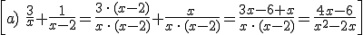
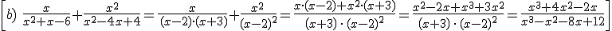
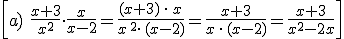
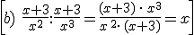
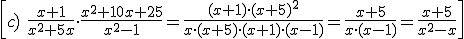
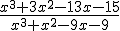
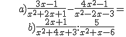
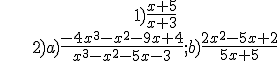

Polinomios y fracciones algebraicas
operaciones con fracciones algebraicas
A. SUMA Y RESTA
Para sumar o restar fracciones algebraicas, necesitamos que tengan el mismo denominador. Entonces sumamos o restamos los numeradores:


B. MULTIPLICACIÓN Y DIVISIÓN
Para multiplicar fracciones algebraicas, multiplicamos los numeradores y los denominadores. Para dividir fracciones algebraicas usamos el producto en cruz:



Ejercicios:
1.- Simplifca:

2.- Calcula:

Soluciones:
